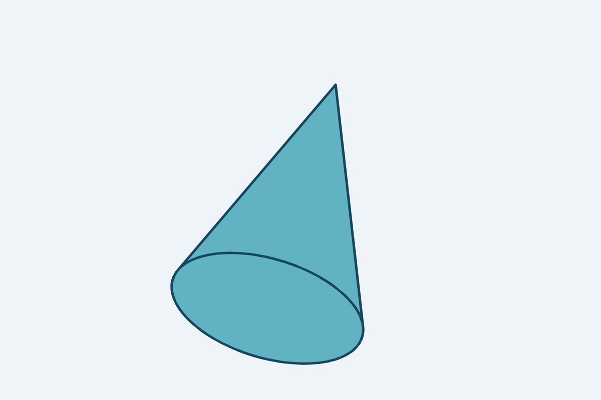
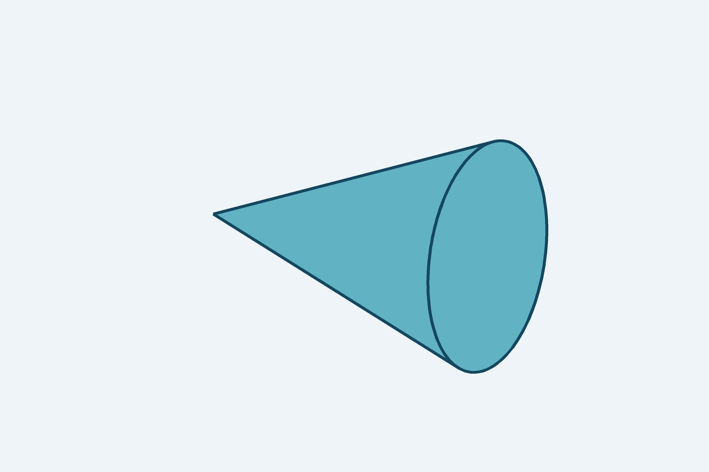

Preparando la vista…

Avísale al docente y sigue la alternativa de contingencia que te indique.
Vista A
Compara las dos vistas y responde las cinco preguntas solo en tu hoja. No compares tus respuestas con otra persona.

Avísale al docente y sigue la alternativa de contingencia que te indique.

Avísale al docente y sigue la alternativa de contingencia que te indique.
Antes de entregar tu hoja: revisa tu código y las cinco respuestas.